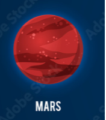
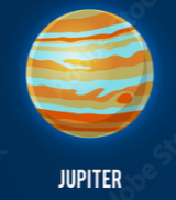
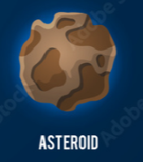

| id | 地點 | 描述 | 報名 |
|---|---|---|---|
| 1 |  |
火星有著多樣的地形，以及兩顆衛星，且為離地球最近的行星，若是幸運的話有機會看到Nasa的探測器。 註：如未遵守旅遊規範導致被拍到照片，本公司恕不負責肖像權等損失 |
|
| 2 |  |
木星為太陽系中最大的行星，氣候變遷相當劇烈，其詳細的內部組成至今還是一團謎，充滿了神秘的氣息 本公司現在強烈徵求自願的旅行者，費用全免並包吃包住，歡迎報名😁 |
|
| 3 |  |
小行星。充滿未知的領域與顛簸的航程，歡迎有冒險精神的人前來參加。 本公司目前暫不開放此行程，期待未來有天再次相遇 |